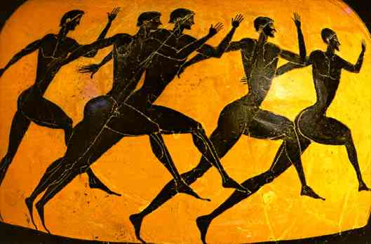

MITOLOGÍA GRIEGA Y ROMANA
¿Que es la mitología griega?
Cuando hablamos de la mitología griega, nos referimos al conjunto de relatos, mitos y leyendas pertenecientes a la Antigua Grecia (c. 1200 a.C.-146 a.C.), considerada como la cuna cultural de la civilización de Occidente.
Está recogida en un conjunto diverso de textos sobrevivientes a la historia, en los que se da cuenta de cómo los antiguos griegos se explicaban el mundo, practicaban su religión y representaban su cultura, así como en esculturas, ilustraciones, cerámicas y otras formas de arte que responden al mismo imaginario.
Los relatos que componen la mitología griega fueron inicialmente de naturaleza oral, ya que en muchos casos son previos a la invención de la escritura. Estos relatos eran recitados por bardos o aedas, y posteriormente plasmados o versionados por escrito.
Algunos de ellos son también la fundación de la literatura griega, en particular los poemas épicos de Homero: la Ilíada y la Odisea, cuyos sucesos ocurren alrededor de la Guerra de Troya (1250 a.C. según Herodoto), o también los poemas de Hesíodo sobre la génesis del mundo y de los reinos griegos: la Teogonía y los Trabajos y días.
Otra fuente importante de estos mitos lo constituye la obra teatral de los grandes dramaturgos de la Grecia Antigua: Sófocles, Eurípides y Esquilo. En estas piezas se relataban episodios referentes a la tradición mítica y heroica, particularmente bajo forma de tragedias: relatos sobre la caída en desgracia de los héroes ante los dioses. Fuente
Origen de la mitologia griega
Hay diversas teorías sobre el origen de la mitología griega. Algunas establecen que los hechos narrados provienen de sucesos reales que se fueron narrando de manera cada vez más vinculada a lo divino, o que simplemente eran interpretaciones de los mitos sagrados religiosos originales, o incluso que no son más que complicadas alegorías de un culto mucho más simple.
Sin embargo, se sabe a ciencia cierta que los griegos antiguos se inspiraron en el imaginario de otras civilizaciones vecinas del Asia Menor y Oriente Próximo, o de civilizaciones previas a la helénica, como la micénica, la cretiense, la minoica, etc. Fuente

© 2020 Todos los derechos reservados - Diseñada por Javier Zudaire - Contacto